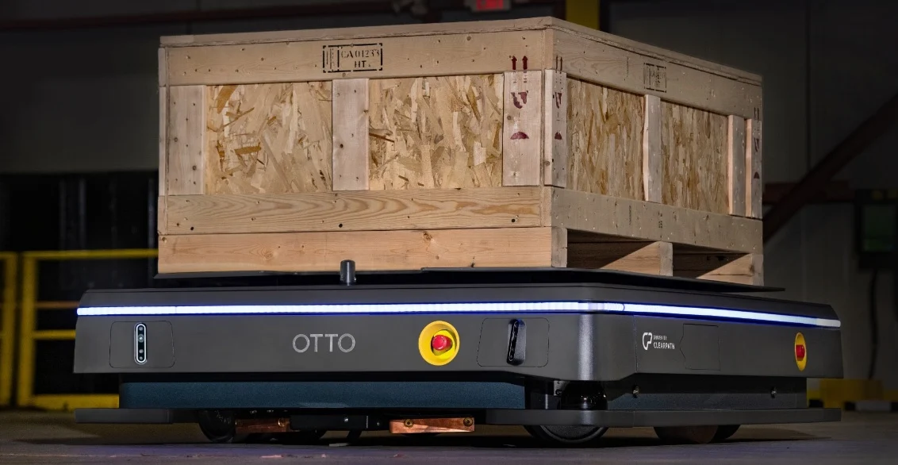

@@include('header.htm')
@@include('sidenav.htm',{'home':'', 'about':'', 'contact':'', 'pages':'active', 'home2':'', 'category':'', 'postDetails':'active', 'pnp':''})

<div class="main-content">
    @@include('mobile-nav.htm')

    <div class="container py-4 my-5">
        @@include('search-form.htm')
        
        <div class="row justify-content-between">
            <div class="col-lg-10">
                
                <h1 class="text-white add-letter-space mt-4">The Future is Electric: Accelerated Electric Vehicle Manufacturing and the Automation Solution</h1>
                <ul class="post-meta mt-3 mb-4">
                    <li class="d-inline-block mr-3">
                        <span class="fas fa-clock text-primary"></span>
                        <a class="ml-1" href="#">3-minute read</a>
                    </li>
                    <li class="d-inline-block">
                        <span class="fas fa-list-alt text-primary"></span>
                        <a class="ml-1" href="#">Electric Vehicles</a>
                    </li>
                </ul>

                <p>The future of automotive manufacturing is electric, with major automakers like Ford, Toyota, and BMW investing billions in transitioning to electric vehicle (EV) production. As governments around the world implement stricter environmental regulations, such as Canada’s mandate for all passenger vehicles to be electric by 2035, the need for accelerated EV production has become more urgent. This shift, however, also highlights the global shortage of skilled labor in manufacturing, making automation solutions crucial for maintaining production efficiency.</p>

                <p>The increased demand for EVs, combined with labor shortages in manufacturing, has driven the adoption of automation technologies. Autonomous mobile robots (AMRs) and other robotic solutions are being implemented to handle repetitive tasks like material movement, allowing human workers to focus on more high-value tasks that require human skills. These automation systems help "future-proof" automotive operations, ensuring that production can continue smoothly despite the challenges posed by workforce shortages.</p>

                <p>For stakeholders and investors, the shift towards EV production presents an exciting opportunity. With governments and automakers investing heavily in retooling factories and adopting advanced automation, there is significant potential for growth in the EV manufacturing sector. Automation not only helps address labor shortages but also enhances production flexibility and efficiency, making it a critical component of the industry's future.</p>

                <div class="blockquote bg-dark my-5">
                    <p class="blockquote-text pl-2">The future of automotive manufacturing lies in electric vehicles, and automation is the key to scaling production efficiently and effectively.</p>
                    <span class="blockquote-footer text-white h4 mt-3">Automotive Expert</span>
                </div>

                <div class="widget">
                    <h1 class="widget-title text-white d-inline-block mb-4">Read the Full Article</h1>
                    <a href="https://ottomotors.com/blog/electric-vehicle-manufacturing-automation/" target="_blank" class="btn btn-primary">Read More </a>
                </div>
            </div>
        </div>
    </div>

    @@include('footer-block.htm')
</div>

@@include('footer.htm')
